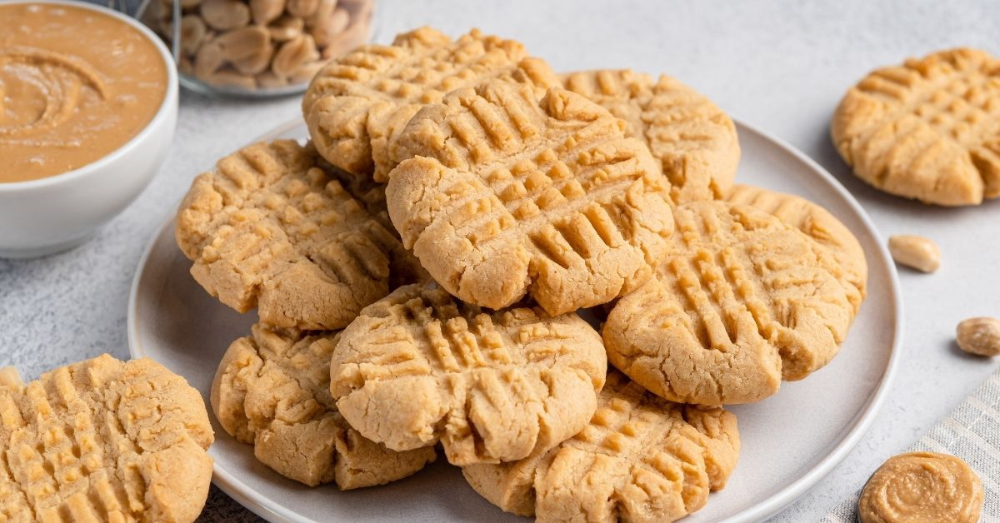

Peanut Butter Cookies

These easy cookies are a delicious hit with both children and adults alike. They are gluten free and only take 12 minutes in the oven.
Ingredients
- 200g Peanut Butter
- 1/4 teaspoon Table salt
- 1 large egg
- 175g Golden caster sugar
Steps
- Preheat oven to 180c/160c fan/Gas 4
- Line 2 large baking trays with baking parchment.
- Mix the peanut butter, salt, and sugar together with a wooden spoon.
- Add the egg and mix until it forms a dough.
- Divide into small balls and divide between the 2 baking trays.
- Press them down with the back of the fork (at this point the mixture can be frozen for upto 2 months. You can cook from frozen but add an extra 2 minutes)
- Cook for 12 minutes or until golden around the edges
- Cool slightly on the tray and then transfer to a wire rack.